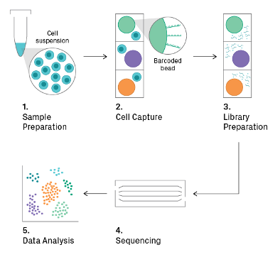
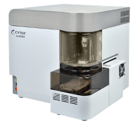

The Vella Lab is part of the division of Infectious Diseases at The Children’s Hospital of Philadelphia. Striving to elucidate immune health, we specialize in studying human CD4 T cells in the setting of vaccination, immune reconstitution, and HIV.
Our mission is to advance translational immunology so that understanding of disease and clinical decisions can be informed by our research advances.
Common Methods used in our Lab:
•Spectral Cytometry
•New Single Cell Sequencing approaches
•Human tissue-based isolation and culture


Children's Hospital of Philadelphia
3401 Civic Center Blvd,
Philadelphia, PA 19104